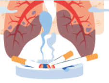
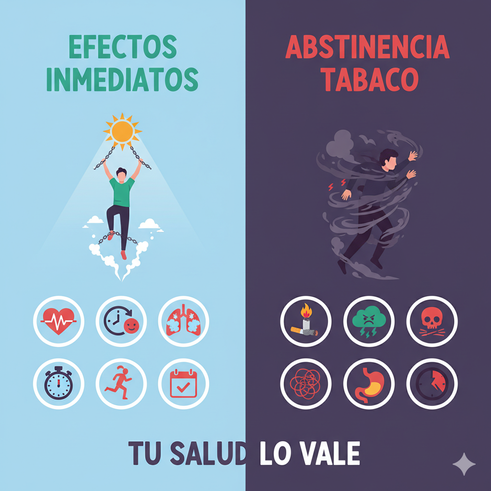
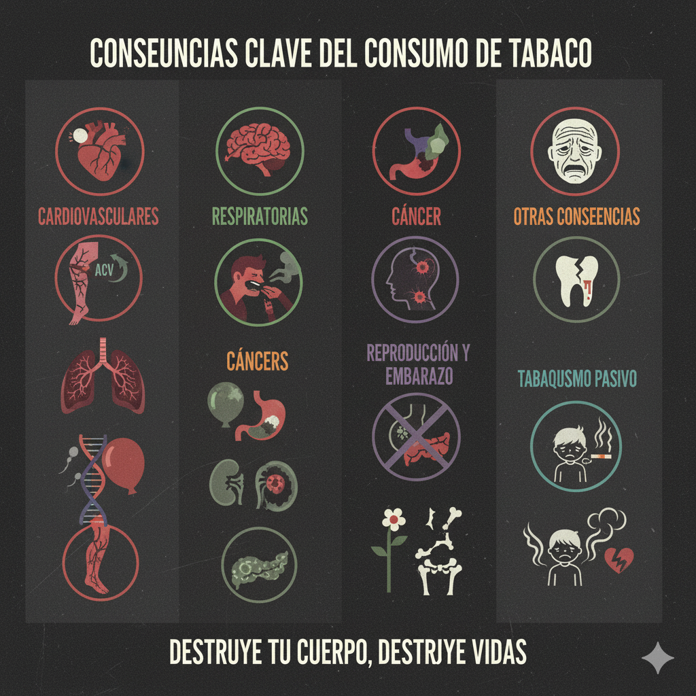
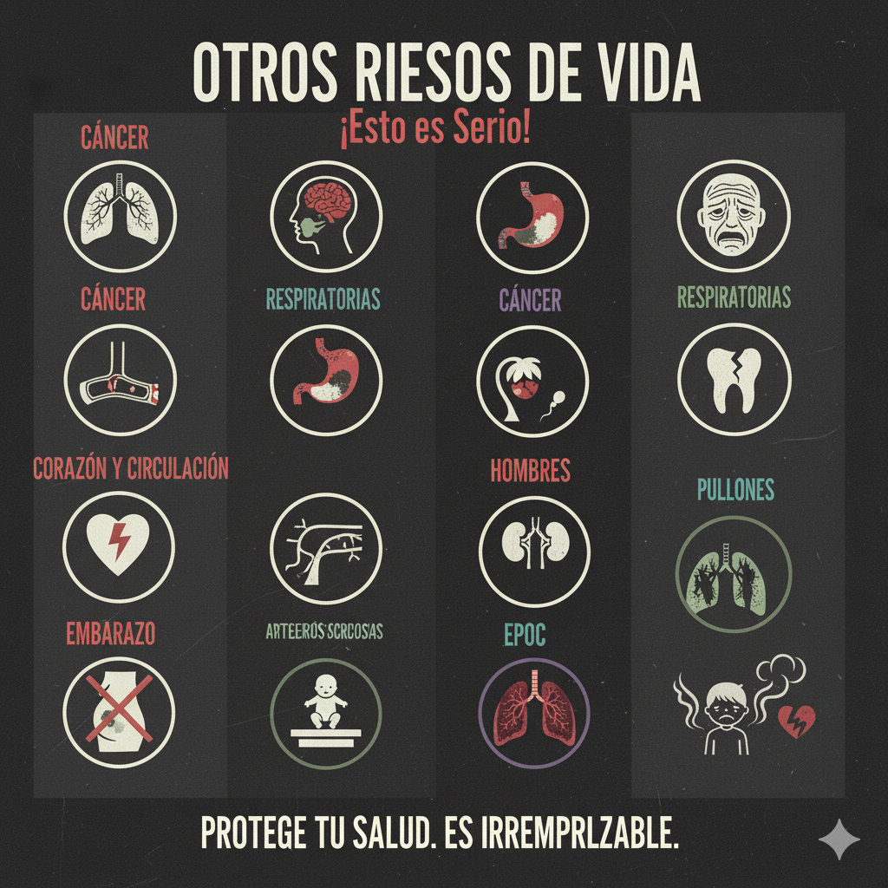
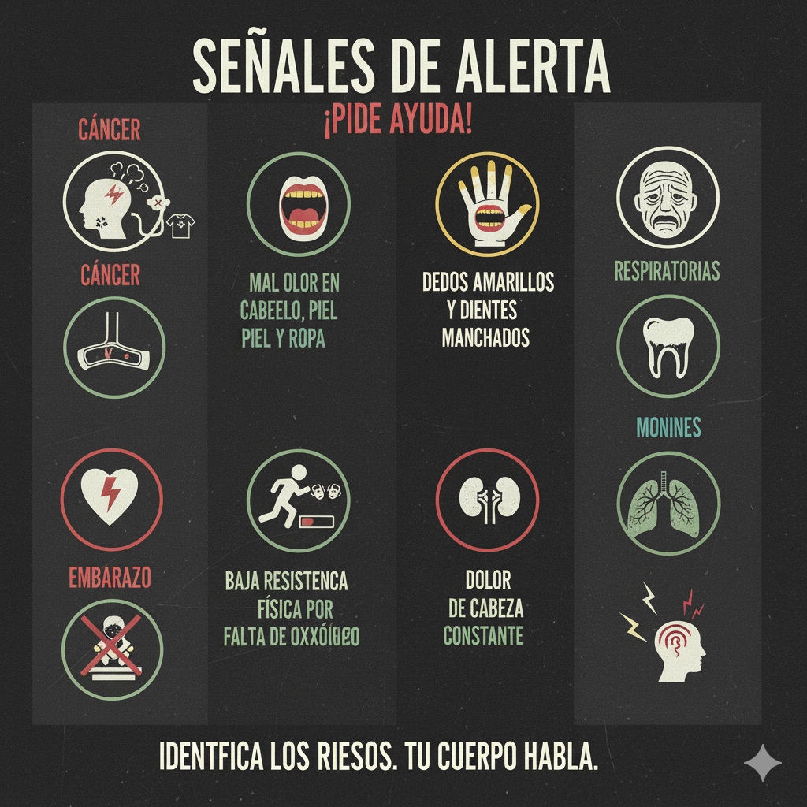

Contexto Rápido: La Verdad en Corto
¿Qué es el Tabaco?
El tabaco (o vapeo) es una droga estimulante. Contiene Nicotina, una de las sustancias más adictivas. Al inhalar el humo, recibes más de 7,000 sustancias químicas (como alquitrán y cianuro). ¡Al menos 70 pueden causar cáncer!
Clasificación: Droga Estimulante
Efectos Inmediatos vs. Abstinencia
Efectos Inmediatos: Sensación de alerta, estimulación y mareo. Falsa percepción de relajación y concentración.
Síndrome de Abstinencia: Es el peor ciclo. Si dejas de fumar, sientes: Deseo incontrolable, irritabilidad, dificultad para concentrarse, aumento de apetito y ansiedad o estados depresivos.
Consecuencias Clave del Consumo
- Mal aliento y dientes manchados.
- Dificultades para respirar y practicar deportes.
- Falta de sensibilidad en papilas gustativas (la comida sabe menos).
- Resequedad de la piel y arrugas prematuras.
- Insomnio y úlceras estomacales.
- Enfermedades respiratorias crónicas (tos, asma, enfisema, bronquitis).
- Agravamiento de dolores de cabeza y migraña.
Otros Riesgos de Vida (¡Esto es Serio!)
- Cáncer de pulmón, boca, garganta, esófago, vejiga, páncreas, riñones, sangre, entre otros.
- Complicaciones cardíacas y derrame cerebral.
- En hombres: Disfunción eréctil y disminución de espermatozoides.
- En el embarazo: Aumenta la probabilidad de aborto, muerte súbita de recién nacidos y bajo peso.
- Arterioesclerosis (depósitos de grasa que tapan las arterias).
- Enfermedad Pulmonar Obstructiva Crónica (EPOC).
Señales de Alerta (¡Pide Ayuda!)
- Mal olor en el cabello, piel y ropa.
- Dedos amarillos y dientes manchados.
- Baja resistencia física por falta de oxígeno.
- Dolor de cabeza constante.
Nuestros Retos de Prevención
¡Checa los Temas para empezar!
Estamos aquí para darte las herramientas psicológicas y pedagógicas para que tú tomes el control de tu salud y tu futuro. ¡Toda la información es tuya!
⚠️ ¡Atención!
Recuerda que la edad más frecuente para empezar a fumar en México es entre los 13 y 14 años. Si te informas ahora, ¡ya llevas ventaja!
Tema 1: ¡Di NO con Estilo! (Asertividad)
No creas todo lo que ves o escuchas. ¡Haz clic en el Mito para revelar la REALIDAD!
El humo tiene más de 7 mil químicos, muchos se usan en productos venenosos o industriales. ¡Haz clic para ver dónde terminan!
Al fumar se generan tres tipos de humo, y todos son tóxicos:
- Humo de Primera Mano: El que inhala directamente el fumador. Llega a tus pulmones y cerebro en segundos.
- Humo de Segunda Mano: Es inhalado por los fumadores pasivos y contiene la mayor cantidad de tóxicos sin filtrar.
- Humo de Tercera Mano: ¡El más persistente! Son los residuos tóxicos que se pegan a la ropa, el pelo, los muebles y el coche.
Un fumador pasivo puede aspirar el equivalente a un cigarro por hora en un ambiente cerrado.
- Disminuye la capacidad de que los pulmones se oxigenen.
- Tos y cansancio/debilitamiento.
- Aumenta el ritmo del corazón y la presión arterial, lo que puede producir ansiedad.
- Mareo, náusea y dolor de cabeza.
- Mal olor (aliento, cabello, ropa, manos) y quemaduras en la piel.
- Pérdida del apetito.
- Causa adicción y menos resistencia física.
- Cáncer: Boca, garganta, pulmón, páncreas, riñones, sangre, entre otros.
- Pérdida importante de los sentidos (vista, olfato, gusto).
- En Hombres: Disfunción eréctil y disminución de espermatozoides.
- En Mujeres: Infertilidad y riesgo de abortos espontáneos.
- En Menores: Limita el crecimiento físico y neuronal.
Además: ¡Más resistencia, mejor economía y adiós al olor a humo!
Fumar no solo te daña a ti, impacta todo tu entorno. ¡Haz clic en las tarjetas para ver la neta!
Usa la Asertividad (decir lo que sientes con respeto) para evitar la presión:
- Disco Rayado: Repite tu negativa con calma: *"No quiero, me hace daño. No quiero, me hace daño."*
- Niebla: Acepta la crítica sin pelear y mantente firme: *"Sí, puede que me vea aburrido, pero he decidido no fumar."*
Tema 2: Emociones ON/OFF (Manejo Emocional)
Psicológicamente, la nicotina es un estimulante. Si sientes "alivio" al fumar, es solo porque estás calmando la ABSTINENCIA que tu propio cuerpo ya te pide por la adicción.
Fumar acelera tu corazón y te pone más tenso/a a largo plazo. ¡No resuelve el estrés!
Si el enojo te lleva a hacer cosas que te perjudican (como fumar o pelear), usa estas técnicas:
- Tiempo Fuera: Aléjate del lugar y de la persona que te molesta. ¡Necesitas enfriarte!
- Autoverbalizaciones: Repite mentalmente: *"Calma"*, *"Esto no vale la pena"*, *"Lo hablaré cuando esté tranquilo/a"* .
Usa tu respiración para apagar la ansiedad, es 100% natural:
- Inhala lentamente contando hasta 4.
- Mantén el aire por 4 segundos.
- Exhala lentamente contando hasta 4.
¡Repite 5 veces! Es un reseteo instantáneo para tu sistema nervioso.
Tema 3: Tu Poder de Decisión (Autoestima y Metas)
Antes de hacer algo, ponlo en una balanza. Decidir bien es ver el panorama completo.
Ventajas de Fumar: ¿"Me relajo"?, ¿"Quedo bien"? Desventajas de Fumar: Cáncer, mal aliento, menos dinero, pérdida de resistencia, adicción. ¡La balanza siempre cae a las desventajas!
Estos factores externos pueden aumentar el riesgo. Identificarlos es el primer paso para cambiar la situación.
Una Autoestima Alta te da la seguridad para ser tú mismo/a y rechazar lo que te hace daño. Acéptate y no busques la aprobación de otros.
Piensa en tu Árbol de Vida: Raíces (tus cualidades), Ramas (tus habilidades), Frutos (tus logros). ¡Crea un futuro fuerte!
Test y Autoevaluación
Descubre si tu forma de hablar es Pasiva, Agresiva o Asertiva. ¡Marca con cuál te identificas más!
Evalúa tu consumo en los últimos 3 meses y descubre tu nivel de riesgo. ¡Sé honesto!
Marca las señales de alerta. Al terminar, recibirás un mensaje asertivo.
¡Checa si tus hábitos personales te dan la protección que necesitas! Marca los factores que apliquen en tu vida.
¡Hora de Jugar! (Pon a Prueba tu Saber)
Juego 1: Memorama Tóxico
Encuentra los pares de sustancia y su descripción. ¡No te dejes engañar por el humo!
Juego 2: Relación de Columnas (Habilidades)
Relaciona el término clave de prevención con su definición correcta.
Juego 3: Sopa de Letras (Factores Protectores)
Encuentra 7 palabras clave de la prevención en la cuadrícula.